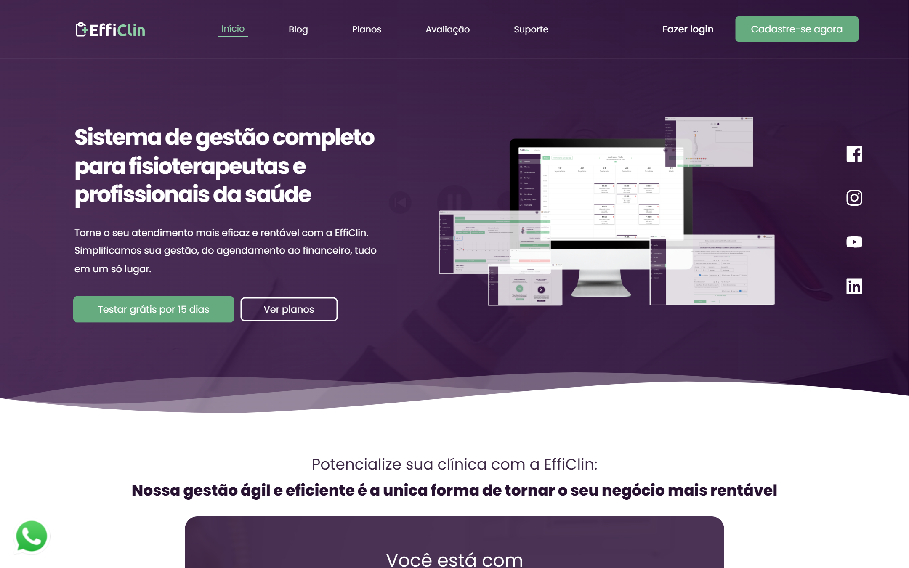
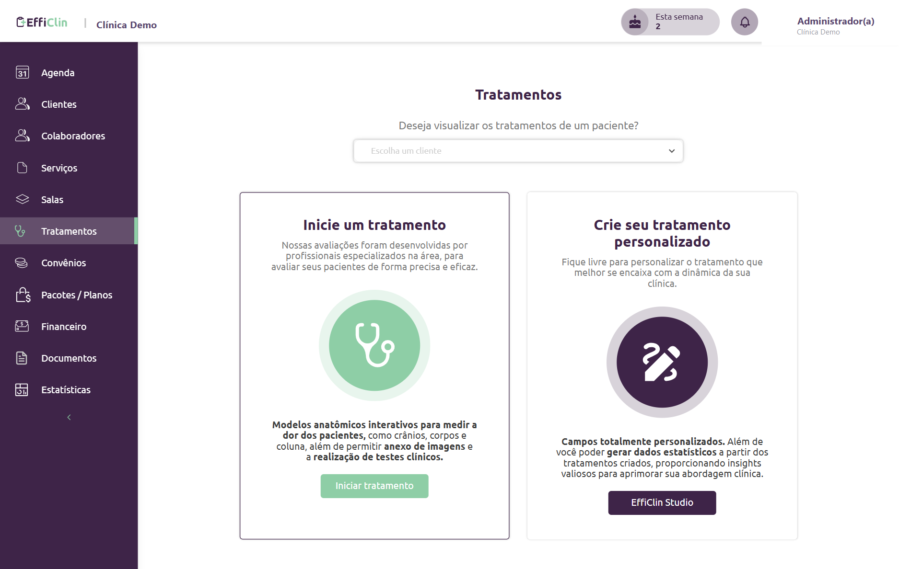
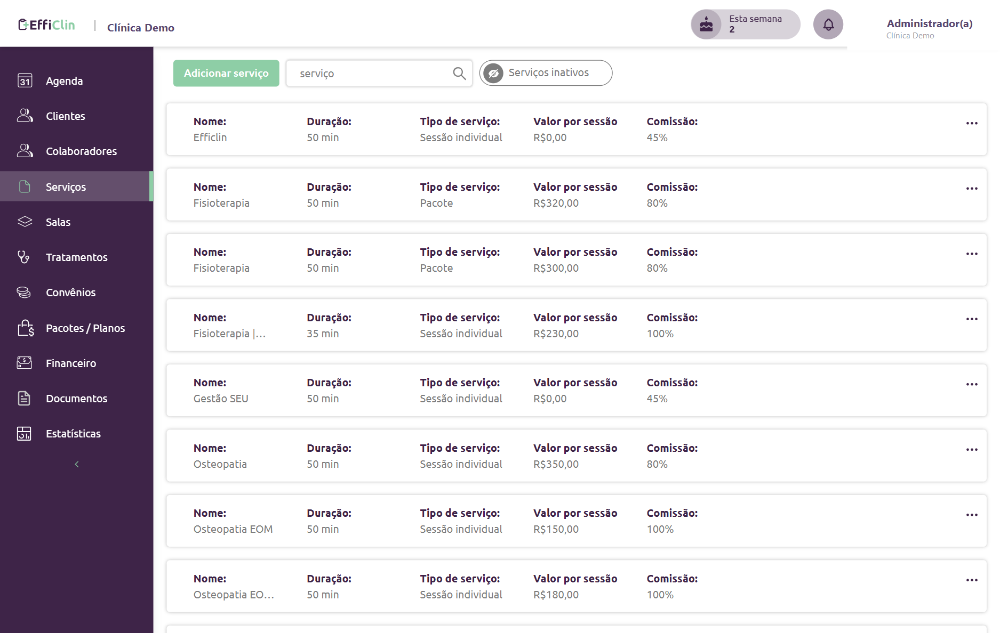

"Mais tecnologia na gestão, mais humanização no atendimento." A EffiClin tira a clínica do papel e das planilhas — e por trás dela há uma plataforma multi-tenant robusta, que eu construí e mantenho em produção.

O produto
A EffiClin atende 5+ especialidades (fisioterapia, osteopatia, pilates, RPG e pediatria) num único sistema. Cada clínica é um tenant isolado, com sua própria equipe, agenda, prontuários e financeiro. Destaques de produto:
- Avaliação clínica visual: desenhos anatômicos clicáveis para marcar pontos de dor e acompanhar a evolução do paciente.
- Agenda automatizada: agendamento com lembretes e confirmação automática por WhatsApp.
- Prontuário eletrônico: fichas customizáveis, histórico e registros clínicos completos.
- Financeiro completo: contas a pagar/receber, fluxo de caixa e dashboards.
- Multiusuário: equipe colaborando no mesmo ambiente, com controle de acesso.
O que eu construí
Atuei como engenheiro full stack e DevOps da plataforma — da modelagem de dados ao deploy em produção:
- Backend (NestJS + Apollo + TypeORM + PostgreSQL): 89 entidades, 74 módulos, 51 resolvers GraphQL e 53 migrações cobrindo agenda, prontuário, faturamento e CRM — com camada de CRUD GraphQL automático (nestjs-query) reaproveitada em centenas de tipos.
- Frontend (Next.js + React + Apollo Client): 82 rotas sobre uma biblioteca própria de componentes em atomic design, design system híbrido (Chakra UI + Ant Design) e formulários complexos (React Final Form).
- Avaliação anatômica em canvas: o desenho do corpo clicável é construído com react-konva — o fisioterapeuta marca pontos e desenha sobre a imagem para registrar a evolução.
- Multi-tenancy real: isolamento de dados por empresa (company-scoping) via hooks e guards, com escala para múltiplas especialidades no mesmo core.
- Tempo real & infra: GraphQL Subscriptions, Redis (cache/filas), Sentry e reCAPTCHA.
Integrações
- Pagar.me: cobrança recorrente — planos, ciclos e cupons.
- Twilio: SMS e WhatsApp para lembretes e confirmações.
- Google Calendar (sincronização de agenda) · RD Station CRM · Puppeteer (PDFs server-side).
DevOps & segurança
- Pipeline de CI/CD próprio e servidores Linux em produção.
- Migrações TypeORM em produção, com cuidado de dados.
- Criptografia em nível de campo (typeorm-encrypted) para dados sensíveis de saúde.
Por dentro do sistema
Algumas telas do app em uso (dados de clínica anonimizados). Da configuração do catálogo de serviços até o módulo de tratamentos, com os modelos anatômicos interativos que descrevi acima.


Resultado
Uma plataforma de saúde real, multi-tenant, em produção e usada por clínicas — com a complexidade de um ERP clínico (agenda + prontuário + financeiro + CRM) sustentada por uma arquitetura que eu posso defender linha a linha.